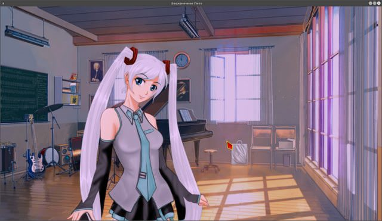

Я не понимаю, походу туп. Меня на 6-ый день(1-ый раз) Кинула на второй день, после прослушивание флешки. Потом 6 день(кинуло в меню)
И как же выйти на концовку
7 дней лета, v.027f (Рут памяти)
Сообщений 61 страница 90 из 282
Поделиться612016-03-13 03:06:32
Поделиться622016-03-13 05:27:32
- Одиночка

- Зарегистрирован: 2015-10-24
- Сообщений: 75
- Пол: Мужской
- Последний визит:
2018-03-28 20:32:30
Автор, вопрос!
Есть ли в новой версии сценария какие-либо изменения рутов других девочек? Может быть новые диалоги, музыка, картинки?
Поделиться632016-03-13 10:50:30
- Вахаха!~

- Откуда: Санкт-Петербург
- Зарегистрирован: 2015-10-21
- Сообщений: 344
- Пол: Мужской
- Активен 1 час 45 минут
Крохотный кусочек у Мику переписан. РФ-гуд у Слави переписан. У Лены убрана сцена-вишенка. Что-то ещё, но я забыл - за три месяца-то переделки.
Поделиться642016-03-13 11:01:43
- Мизантроп

- Откуда: Москва / Ташкент
- Зарегистрирован: 2015-10-21
- Сообщений: 890
- Последний визит:
Сегодня 15:29:43
7dl-kun написал(а):
Что-то ещё, но я забыл
Lansar_Scavana написал(а):
картинки?
Теперь есть рюкзак "Катава-стайл" =)
Поделиться652016-03-13 11:19:37
- Мизантроп
- Откуда: Москва / Ташкент
- Зарегистрирован: 2015-10-21
- Сообщений: 890
- Последний визит:
Сегодня 15:29:43
Тов. Автор.
Ну вот ну серьёзно...
Код:
label alt_day3_router_un:
if lp_un >= 12 or (lp_un >= 11 and alt_day1_sl_conv):
"Мне снилась Лена…"
window hide
if alt_day3_un_med_help == 1:
$ routetag = "un7dl"
jump alt_day4_un_7dl_start
elif (alt_day2_date == 132) and (alt_day3_dancing == 132):
$ routetag = "un7dl"
jump alt_day4_un_fz_startИ откуда взять 12 lp_un? Там ведь 2 строки заменить нужно было, а не одну.
Поделиться662016-03-13 11:20:26
- Ньюфаг

- Зарегистрирован: 2016-01-18
- Сообщений: 3
- Последний визит:
2016-11-27 07:04:20
Скачал обнову, все исправлено.
Отредактировано DanDan (2016-03-13 16:59:36)
Поделиться672016-03-13 11:27:28
7dl-kun написал(а):
У Лены убрана сцена-вишенка.
Почему??? 
Поделиться682016-03-13 11:48:41
- Ньюфаг
- Зарегистрирован: 2016-01-18
- Сообщений: 3
- Последний визит:
2016-11-27 07:04:20
А что за сцена вишенка?
Поделиться692016-03-13 11:52:50
- Мизантроп
- Откуда: Москва / Ташкент
- Зарегистрирован: 2015-10-21
- Сообщений: 890
- Последний визит:
Сегодня 15:29:43
DanDan написал(а):
А что за сцена вишенка?
Такое невозможно забыть
Поделиться702016-03-13 11:54:02
- Вахаха!~
- Откуда: Санкт-Петербург
- Зарегистрирован: 2015-10-21
- Сообщений: 344
- Пол: Мужской
- Активен 1 час 45 минут
DanDan написал(а):
смысл теряется в наборе фраз
Версия?
Поделиться712016-03-13 11:54:37
- Вахаха!~
- Откуда: Санкт-Петербург
- Зарегистрирован: 2015-10-21
- Сообщений: 344
- Пол: Мужской
- Активен 1 час 45 минут
Alex646 написал(а):
Почему???
Для придания большей ценности археологическим изыскам, конечно.
Поделиться722016-03-13 12:09:41
- Одиночка

- Зарегистрирован: 2015-10-21
- Сообщений: 70
- Последний визит:
2016-07-16 21:25:33
Свернутый текст
Я тут кое-что уточнить хотел.
События, описанные в дневнике Ольги, а также те, о которых рассказывает Лена, они же всегда имеют место?
То есть на момент попадания читателя в лагерь вместе с Семеном, все это уже безальтернативно произошло?
Или есть еще больший круг с различными вариациями?
Отредактировано Moonshine (2016-03-13 12:09:52)
Поделиться732016-03-13 12:09:41
7dl-kun написал(а):
Для придания большей ценности археологическим изыскам, конечно.
Очередная диверсия ленофагов из бета-тестеров - 100%.
Поделиться742016-03-13 12:13:32
- Вахаха!~
- Откуда: Санкт-Петербург
- Зарегистрирован: 2015-10-21
- Сообщений: 344
- Пол: Мужской
- Активен 1 час 45 минут
Alex646 написал(а):
Очередная диверсия ленофагов из бета-тестеров - 100%.
Не диверсия. Была мысля устроть ФЗ для Локи, и даже была начата работа в эту сторону, но я её свернул. А у Герка типаж не тот, чтобы устраивать такие вот плоттвисты.
Moonshine
Нет, всё это было, случилось и безъальтернативно произошло. Никакой мистики, кроме проблем с памятью в духе "эффекта бабочки".
Поделиться752016-03-13 12:26:24
7dl-kun написал(а):
Не диверсия. Была мысля устроть ФЗ для Локи, и даже была начата работа в эту сторону, но я её свернул. А у Герка типаж не тот, чтобы устраивать такие вот плоттвисты.
Но сцена-то шикарная. Она ж пропадет зазря...
Поделиться762016-03-13 12:34:42
- Мизантроп
- Откуда: Москва / Ташкент
- Зарегистрирован: 2015-10-21
- Сообщений: 890
- Последний визит:
Сегодня 15:29:43
Alex646 написал(а):
Она ж пропадет зазря...
Тюююк!
Поделиться772016-03-13 12:35:09
- Ньюфаг

- Зарегистрирован: 2016-01-07
- Сообщений: 9
- Пол: Мужской
- Последний визит:
2016-07-25 02:24:15
У Лены убрана сцена-вишенка.
Ура, товарищи!
Поделиться782016-03-13 12:55:58
Dantiras написал(а):
Тюююк!
Что-то другое увидеть от ленофага было бы удивительно...
Поделиться792016-03-13 13:20:20
- Ньюфаг

- Откуда: Москва
- Зарегистрирован: 2015-10-26
- Сообщений: 29
- Пол: Мужской
- Возраст: 24 [1993-08-16]
- Последний визит:
Сегодня 13:55:28
7dl-kun написал(а):
Не диверсия. Была мысля устроть ФЗ для Локи, и даже была начата работа в эту сторону, но я её свернул. А у Герка типаж не тот, чтобы устраивать такие вот плоттвисты.
А работа свернута совсем-совсем или просто отложена на попозже? Герк по-прежнему будет гордым обитателем френдзоны, или сия почетная привилегия может в будущем перейти Локи в конце концов?
Поделиться802016-03-13 13:27:41
- Вахаха!~
- Откуда: Санкт-Петербург
- Зарегистрирован: 2015-10-21
- Сообщений: 344
- Пол: Мужской
- Активен 1 час 45 минут
Бэз понятия. Может быть, в будущем. Сейчас у меня в приоритете немного другие вещи.
Поделиться812016-03-13 13:29:42
- Мизантроп
- Откуда: Москва / Ташкент
- Зарегистрирован: 2015-10-21
- Сообщений: 890
- Последний визит:
Сегодня 15:29:43
alt_route_me_zneutral
Логика
№1. alt_day5_neu_breakfast.
Строки 4687-4691
Код:if alt_day4_neu_mt_diary: if alt_day4_fz_sh == 1 or alt_day4_fz_sh == 4: $ mt_pt += 3 else: $ mt_pt += 1
Суть проблемы: не получает Герк в ФЗ-дне флаг alt_day4_neu_mt_diary, т.к. нет его там.
Возможное решение: или пойти сложно и сделать какой-то эвент с дневником в ФЗ-дне, или изменить условия завтрака в дне №5 Сыча.
Поделиться822016-03-13 13:58:58
- Мизантроп
- Откуда: Москва / Ташкент
- Зарегистрирован: 2015-10-21
- Сообщений: 890
- Последний визит:
Сегодня 15:29:43
alt_route_mt_7dl
Переход от одного принципа построения рута к другому и обратно не получился. Сейчас слишком много осталось return, которые выбрасывют в главное меню.
Я попадался на послеобеденной Ольге и Славя-Катапульте.
Отредактировано Dantiras (2016-03-13 13:59:08)
Поделиться832016-03-13 14:19:15
- Одиночка
- Зарегистрирован: 2015-10-21
- Сообщений: 70
- Последний визит:
2016-07-16 21:25:33
Вроде не репортили еще.
Небольшой трабл с волосами Мику.
Свернутый текст

alt_route_me_zneutral
6649 Если мало лп с Алисой, вылезает менюшка с одним вариантом, не проблема, конечно, но выглядит немного странно.
Поделиться842016-03-13 14:20:07
- Вахаха!~
- Откуда: Санкт-Петербург
- Зарегистрирован: 2015-10-21
- Сообщений: 344
- Пол: Мужской
- Активен 1 час 45 минут
Качаем хотфикс, должно помочь.
Поделиться852016-03-13 14:31:21
- Мизантроп
- Откуда: Москва / Ташкент
- Зарегистрирован: 2015-10-21
- Сообщений: 890
- Последний визит:
Сегодня 15:29:43
alt_route_dv_7dl
Невозможно на текущий момент выполнить условия по достижению транзитной концовки Meet me There.
Мне удалось с учётом работы alt_day3_lp_checker(alt_dater) aka "Антигаремник-кастратор" набрать к транзитной развилке в Алисхен-7ДЛ целых 3 lp_un (с учётом проигрыша в карты Лене). Но для транзита нужно более 5.
Стоит пересмотреть правила выхода на эту концовку в сторону послабления по lp_un или даже (как вариант) добавить в условия persistent.un_7dl_good.
Отредактировано Dantiras (2016-03-13 14:32:42)
Поделиться862016-03-13 16:20:03
- Одиночка
- Зарегистрирован: 2015-10-21
- Сообщений: 70
- Последний визит:
2016-07-16 21:25:33
Трейс
I'm sorry, but an uncaught exception occurred.
While running game code:
File "game/scenario_alt/Scenario/WIP/queue/alt_route_un_fz.rpy", line 4385, in script
File "renpy/common/00library.rpy", line 21, in python
NameError: name 'alt_opp' is not defined-- Full Traceback ------------------------------------------------------------
Full traceback:
File "/home/dmt/.games/Everlasting Summer/renpy/bootstrap.py", line 265, in bootstrap
renpy.main.main()
File "/home/dmt/.games/Everlasting Summer/renpy/main.py", line 327, in main
run(restart)
File "/home/dmt/.games/Everlasting Summer/renpy/main.py", line 78, in run
renpy.execution.run_context(True)
File "/home/dmt/.games/Everlasting Summer/renpy/execution.py", line 509, in run_context
context.run()
File "/home/dmt/.games/Everlasting Summer/renpy/execution.py", line 288, in run
node.execute()
File "/home/dmt/.games/Everlasting Summer/renpy/ast.py", line 1112, in execute
renpy.exports.with_statement(trans, paired)
File "/home/dmt/.games/Everlasting Summer/renpy/exports.py", line 1023, in with_statement
return renpy.game.interface.do_with(trans, paired, clear=clear)
File "/home/dmt/.games/Everlasting Summer/renpy/display/core.py", line 1534, in do_with
self.with_none()
File "/home/dmt/.games/Everlasting Summer/renpy/display/core.py", line 1552, in with_none
self.show_window()
File "/home/dmt/.games/Everlasting Summer/renpy/display/core.py", line 1526, in show_window
renpy.config.empty_window()
File "renpy/common/00library.rpy", line 21, in _default_empty_window
who = eval(who)
File "/home/dmt/.games/Everlasting Summer/renpy/python.py", line 1338, in py_eval
return eval(py_compile(source, 'eval'), globals, locals)
File "<none>", line 1, in <module>
NameError: name 'alt_opp' is not definedLinux-3.19.0-51-generic-x86_64-with-debian-jessie-sid
Ren'Py 6.16.3.502
Everlasting Summer 1.0
Поделиться872016-03-13 16:23:19
- Вахаха!~
- Откуда: Санкт-Петербург
- Зарегистрирован: 2015-10-21
- Сообщений: 344
- Пол: Мужской
- Активен 1 час 45 минут
О, этот бессмертный баг. Попробуй загрузиться перед игрой в КНБ, может помочь. Или нет.
Поделиться882016-03-13 16:24:40
- Мизантроп
- Откуда: Москва / Ташкент
- Зарегистрирован: 2015-10-21
- Сообщений: 890
- Последний визит:
Сегодня 15:29:43
7dl-kun написал(а):
может помочь. Или нет.
Точно помогает. В 50-% случаев =)
Я уже этот баг даже не репорчу (воспринимаю как изюминку мода).
Отредактировано Dantiras (2016-03-13 16:30:06)
Поделиться892016-03-13 16:35:36
- Одиночка
- Зарегистрирован: 2015-10-21
- Сообщений: 70
- Последний визит:
2016-07-16 21:25:33
А мне впервые попался. =)
Но я редкий гость в фз-руте. В прошлый раз, когда его проходил и не было этой игры по-моему.
Просто, с учетом всех обстоятельств, переход с Лены-фз на рут Ольги выглядит как весьма интересный сюжет.
И да, помогло.
Отредактировано Moonshine (2016-03-13 16:36:25)
Поделиться902016-03-13 16:45:44
- Вахаха!~
- Откуда: Санкт-Петербург
- Зарегистрирован: 2015-10-21
- Сообщений: 344
- Пол: Мужской
- Активен 1 час 45 минут
Moonshine написал(а):
выглядит как весьма интересный сюжет
Угу, подтягиваю хвосты и затыкаю бреши.